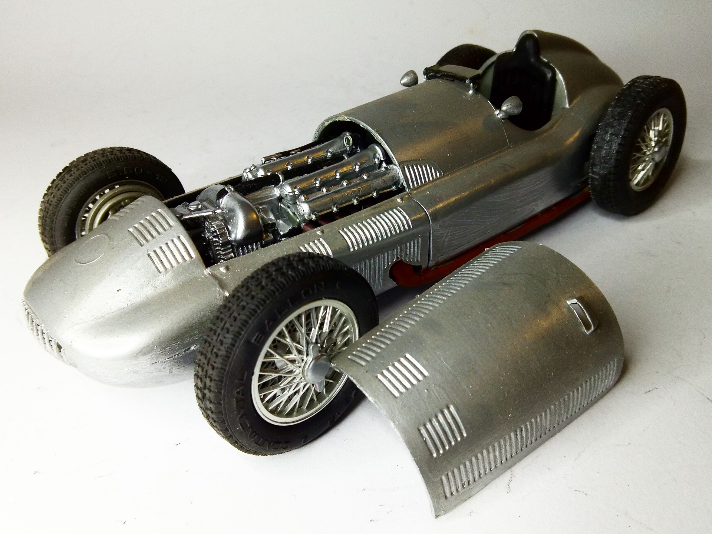
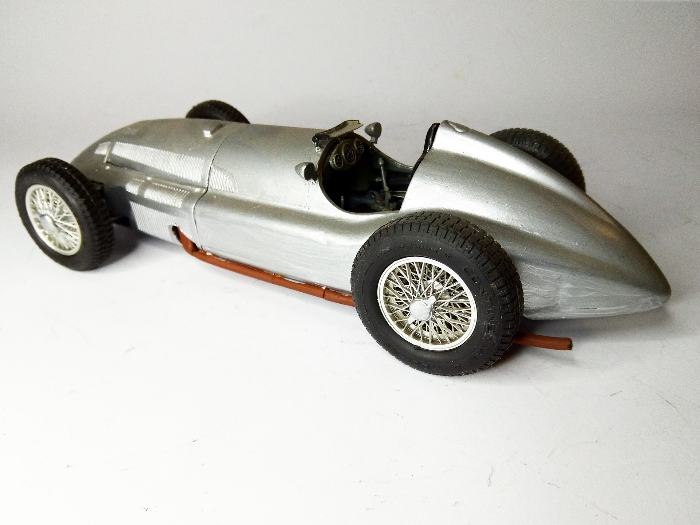

Auto e veicoli stradali · scale model archive
Mercedes Benz W 163
Mercedes Benz W 163 — Kit: Revival, Scale: 1/20. Raced in 1939 #1/20 #Revell #Mercedes #W163

Photo gallery

English description
Raced in 1939
#1/20 #Revell #Mercedes #W163
Descrizione italiana
Corse nel 1939.